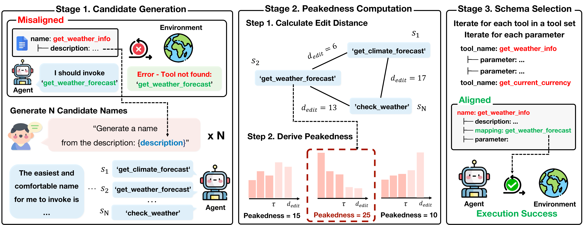
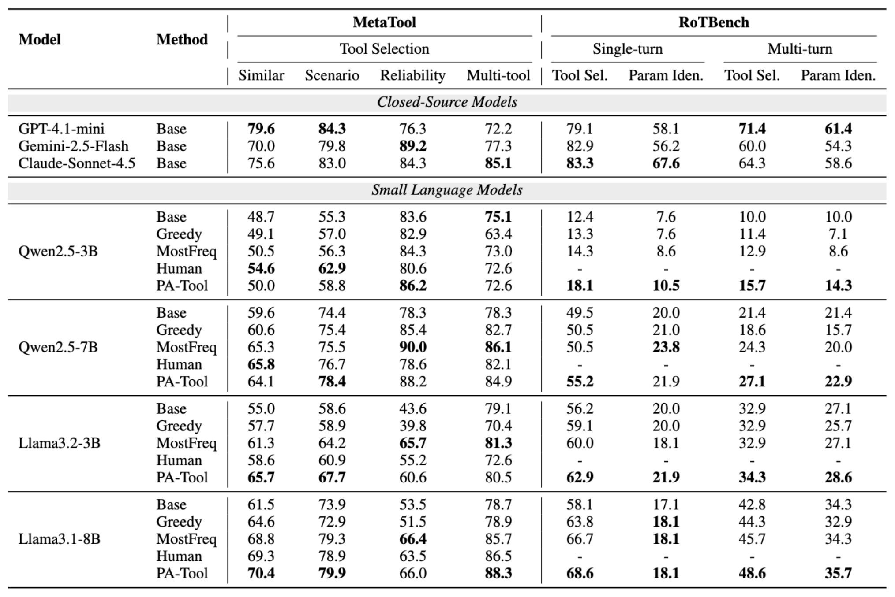
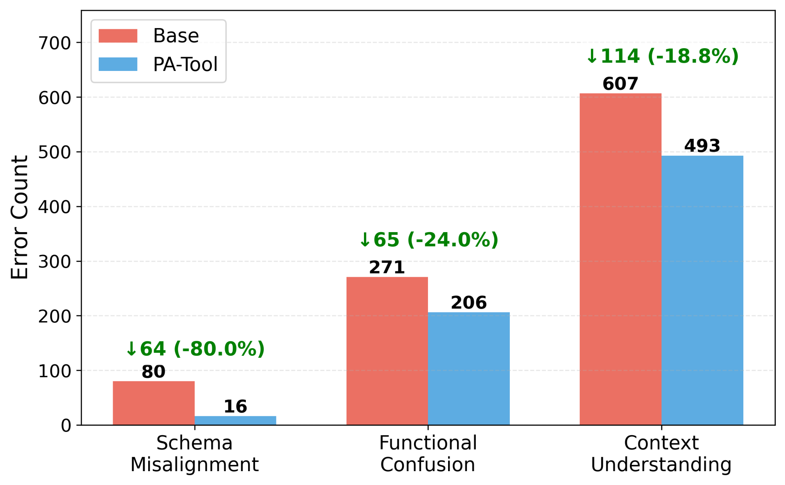
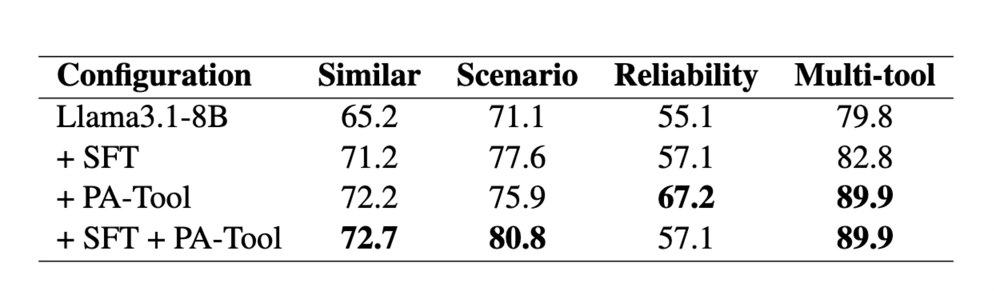

Abstract
Small language models (SLMs) enable scalable tool-augmented multi-agent systems where multiple SLMs handle subtasks orchestrated by a powerful coordinator. However, they struggle with tool-use tasks, particularly in selecting appropriate tools and identifying correct parameters. A common failure mode is schema misalignment: models hallucinate plausible tool names that are absent from the provided tool schema, due to different naming conventions internalized during pretraining. Rather than training models to adapt to unfamiliar schemas, we propose adapting schemas to align with models' pretrained knowledge. We introduce PA-Tool (Pretraining-Aligned Tool Schema Generation), a training-free method that leverages peakedness, a signal used in contamination detection that indicates pretraining familiarity, to rename tool components. By generating multiple candidates and selecting the candidate with the highest peakedness, PA-Tool identifies pretraining-aligned naming patterns. Experiments on MetaTool and RoTBench show improvements of up to 17%, with schema misalignment errors reduced by 80%. PA-Tool enables small models to substantially improve tool-use accuracy without retraining, showing that schema-level interventions can unlock the tool-use potential of resource-efficient models.
Method

PA-Tool is training-free: rather than adapting the model to an unfamiliar schema, it adapts the schema to the model. For each tool component (tool and parameter names), PA-Tool repeatedly asks the model to propose a name, surfacing the names it already prefers from pretraining. It then ranks these candidates by peakedness, a score based on character-level edit-distance similarity among the samples that captures how strongly the model converges on a single name. Each component is renamed to its highest-peakedness candidate, yielding a schema whose conventions match the model's internal knowledge. This schema-level change alone makes small models far more reliable at tool use, with no fine-tuning required.
Results
Across MetaTool and RoTBench, PA-Tool improves tool-use accuracy by up to 17% over the base schema and often matches or beats human-written schemas, all without any retraining. See the paper for the full discussion.

Main results on MetaTool and RoTBench. Best value within each model block is in bold. (Click to enlarge.)
Error Analysis
Are these gains actually coming from reduced schema misalignment? To check, we group tool-use failures into three categories. PA-Tool reduces schema-misalignment errors most sharply (−80.0%), and also cuts functional confusion (−24.0%) and context-understanding errors (−18.8%). The largest drop falls exactly on the failure mode PA-Tool targets, confirming that the improvement comes from better schema alignment.

Comparison with Fine-tuning (SFT)
The most common way to reduce tool-calling failures is fine-tuning the model to adapt it to the schemas. Can a training-free method like PA-Tool be competitive with that? On Llama3.1-8B, PA-Tool matches fine-tuning (SFT) and even surpasses it on several metrics, while combining the two (SFT + PA-Tool) performs best, showing that schema alignment is complementary to fine-tuning rather than a replacement.

Poster
BibTeX
@inproceedings{lee-etal-2026-dont,
title = "Don{'}t Adapt Small Language Models for Tools; Adapt Tool Schemas to the Models",
author = "Lee, Jonggeun and
Song, Woojung and
Han, Jongwook and
Pyun, Haesung and
Jo, Yohan",
editor = "Liakata, Maria and
Moreira, Viviane P. and
Zhang, Jiajun and
Jurgens, David",
booktitle = "Proceedings of the 64th Annual Meeting of the {A}ssociation for {C}omputational {L}inguistics (Volume 1: Long Papers)",
month = jul,
year = "2026",
address = "San Diego, California, United States",
publisher = "Association for Computational Linguistics",
url = "https://aclanthology.org/2026.acl-long.948/",
pages = "20695--20719",
ISBN = "979-8-89176-390-6",
abstract = "Small language models (SLMs) enable scalable tool-augmented multi-agent systems where multiple SLMs handle subtasks orchestrated by a powerful coordinator. However, they struggle with tool-use tasks, particularly in selecting appropriate tools and identifying correct parameters. A common failure mode is \textit{schema misalignment}: models hallucinate plausible tool names that are absent from the provided tool schema, due to different naming conventions internalized during pretraining. Rather than training models to adapt to unfamiliar schemas, we propose adapting schemas to align with models' pretrained knowledge. We introduce \textbf{PA-Tool} (Pretraining-Aligned Tool Schema Generation), a training-free method that leverages peakedness, a signal used in contamination detection that indicates pretraining familiarity, to rename tool components. By generating multiple candidates and selecting the candidate with the highest peakedness, PA-Tool identifies pretraining-aligned naming patterns. Experiments on MetaTool and RoTBench show improvements of up to 17{\%}, with schema misalignment errors reduced by 80{\%}. PA-Tool enables small models to substantially improve tool-use accuracy without retraining, showing that schema-level interventions can unlock the tool-use potential of resource-efficient models. Our code is available at \url{https://github.com/holi-lab/PA-Tool}."
}